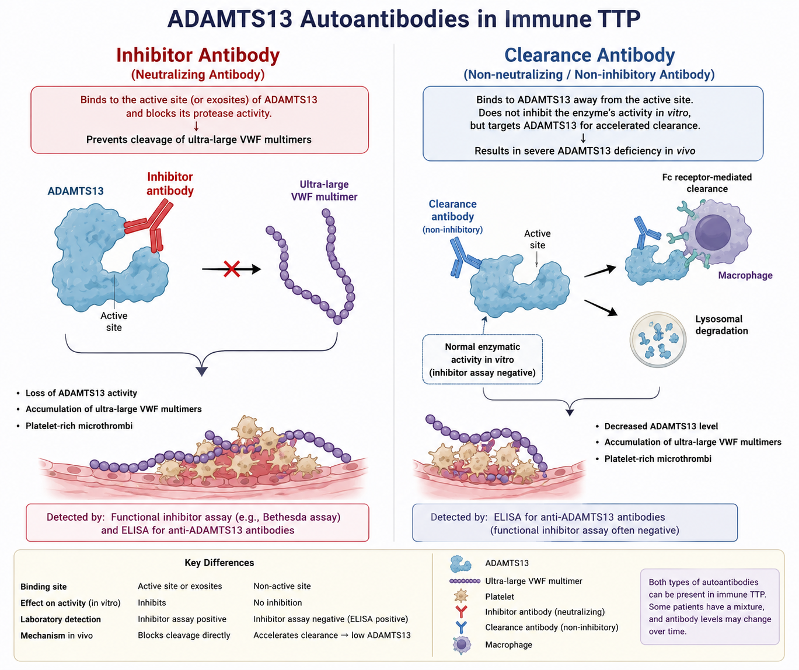

Discordant results
Reconcile severe ADAMTS13 deficiency with a negative inhibitor assay.
Case 3 · Coagulation curriculum
Three cases. One deceptively simple lesson: a laboratory result is an estimate of biology—not biology itself.
Reconcile severe ADAMTS13 deficiency with a negative inhibitor assay.
Recognize what functional and immunologic methods detect—and miss.
Identify hemolysis and EDTA contamination before they mislead care.
Section 2 of 8
By the end of this module, you should be able to move from an isolated number to a clinically coherent laboratory interpretation.
Recognize the clinical and laboratory pattern that creates high pretest probability for immune-mediated TTP.
Interpret severe ADAMTS13 deficiency when a functional inhibitor assay is negative.
Distinguish neutralizing inhibitors from non-neutralizing antibodies that accelerate enzyme clearance.
Recognize in vitro hemolysis and EDTA contamination as causes of discordant activity results.
Use the PLASMIC score as a pretest-probability tool while definitive ADAMTS13 testing is pending.
Explain why analytical sensitivity, assay design, and specimen quality must accompany the numerical result.
Section 3 of 8
TTP is a thrombotic microangiopathy driven by severe functional deficiency of ADAMTS13, the protease that controls ultra-large von Willebrand factor multimers.
Antibodies may neutralize ADAMTS13, accelerate its clearance, or do both. Functional inhibitor and antibody tests therefore provide related—but nonidentical—information.
Congenital TTP is established by compatible clinical and laboratory findings plus molecular confirmation. A single negative inhibitor test is not sufficient proof.
Section 4 of 8
“ADAMTS13 activity low, inhibitor negative” is a result pattern—not a final diagnosis.
Estimates functional cleavage of a VWF-based substrate. Severe deficiency strongly supports TTP in the appropriate phenotype.
Tests whether patient plasma reduces ADAMTS13 activity in vitro. Low-titer or non-neutralizing antibodies may escape detection.
Detects binding anti-ADAMTS13 antibodies, including antibodies that promote clearance without measurable in vitro inhibition.
In the retrospective series highlighted by the source document, many severely deficient samples initially lacked a detectable inhibitor. The broader lesson is method dependence.
Analytical sensitivity asks how little analyte a method can detect. Clinical sensitivity asks how often the test is positive in patients with the disease.
Section 5 of 8
Two antibody behaviors can converge on the same biological endpoint: severe ADAMTS13 deficiency.
Binds functionally important sites and blocks protease activity. It produces inhibition in vitro and is usually detected by a functional mixing assay.
Binds ADAMTS13 without measurably blocking the assay substrate reaction, but promotes accelerated removal of the enzyme in vivo.

Section 6 of 8
Commit to an interpretation before revealing each outcome. Productive mistakes are part of the exercise.
A 42-year-old woman presents with thrombocytopenia, microangiopathic hemolysis, and neurologic symptoms.
Select each feature present. For unavailable inputs, this exercise uses the case’s intended high-probability profile.
After traumatic venipuncture, a grossly hemolyzed specimen yields ADAMTS13 activity of 12%. The clinical picture is inconsistent with TTP.
An ADAMTS13 specimen is contaminated with EDTA. Activity returns below 10%.
Section 7 of 8
Eight questions with immediate explanations. Your result is saved only in this browser.
Section 8 of 8
The absence of evidence is not evidence of absence—especially when the assay was never designed to detect every pathogenic mechanism.
Practice the interpretation again without leaving this page.
Return to cases ↑Use the explanations to close any remaining knowledge gaps.
Retake quiz ↑Educational use only. Based primarily on the supplied “Case 3: Hodge Podge of TTP” document; not for patient-specific medical decision-making.